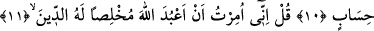
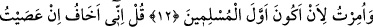
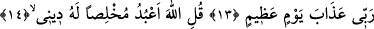
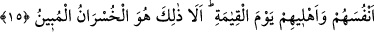
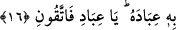
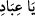
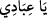

EY KULLARIM!
YALNIZCA BENDEN KORKUN
10. (Rasûlüm!) Söyle: Ey îman eden kullarım! Rabbinize karşı gelmekten
sakının. Bu dünyada iyilik yapanlara iyilik vardır. Allah’ın (yarattığı) yeryüzü
geniştir. Yalnız sabredenlere, mükâfatları hesapsız ödenecektir.
11. De ki: Bana, dini Allah’a hâlis kılarak O’na kulluk etmem emrolundu.
12. Bana müslümanların ilki olmam emrolundu.
13. De ki: Rabbime karşı gelirsem, doğrusu büyük günün azâbından korkarım.
14. De ki: Ben dinimde ihlâs ile ancak Allah’a ibâdet ederim.
15. (Ey Allah’a eş koşanlar!): Siz de O’ndan başka dilediğinize tapın! De ki:
Gerçekten hüsrana uğrayanlar, kıyamet günü hem kendilerini, hem de âilelerini
ziyana sokanlardır. Bilesiniz ki, bu apaçık hüsrandır.
16. Onların üstlerinde ateşten tabakalar, altlarında da (öyle) tabakalar var. İşte
Allah kullarını bununla korkutuyor. Ey kullarım! Yalnızca benden korkun.
“(Rasûlüm!) Söyle: Ey îman eden kullarım!” Yâni onlara bu sözümü aynıyla/olduğu
gibi söyle.
Burada îman edenler Allah’a âid zamire izâfe edilmek sûretiyle şereflendirilmiştir.
Çünkü “ kelimesinin aslı “dir. Kesre ile yetinilerek yâ harfi hazfedilmiştir.
Keşfü’l-esrâr’da şöyle der: “Bu hitap, kendi nefislerinin muradını Hakk’ın
muvafakatına veren, Allah’ın rızâsını nefislerinin hevâsına tercih eden topluluğadır.